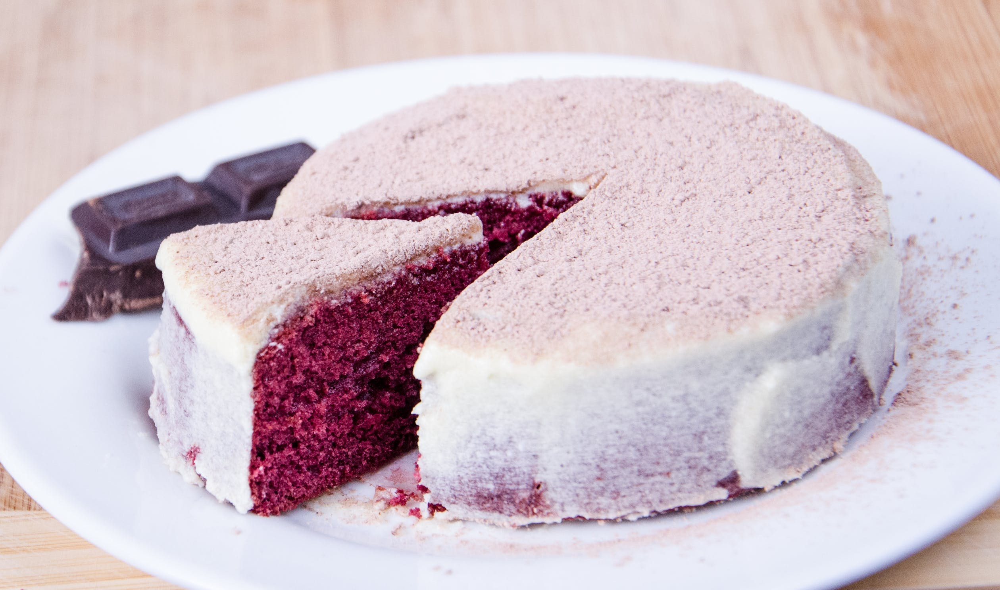
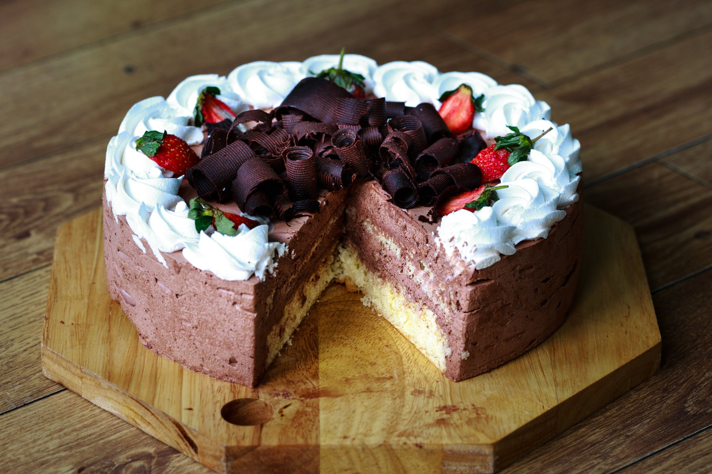
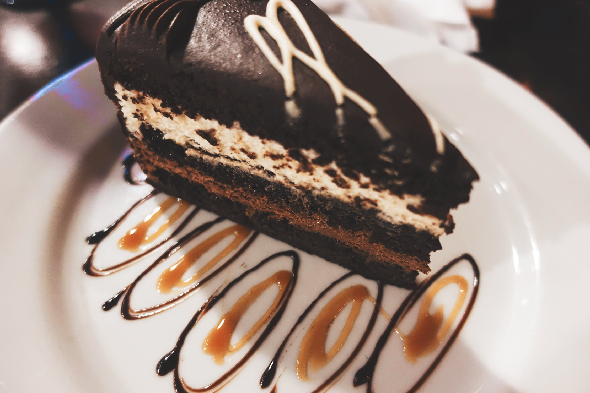
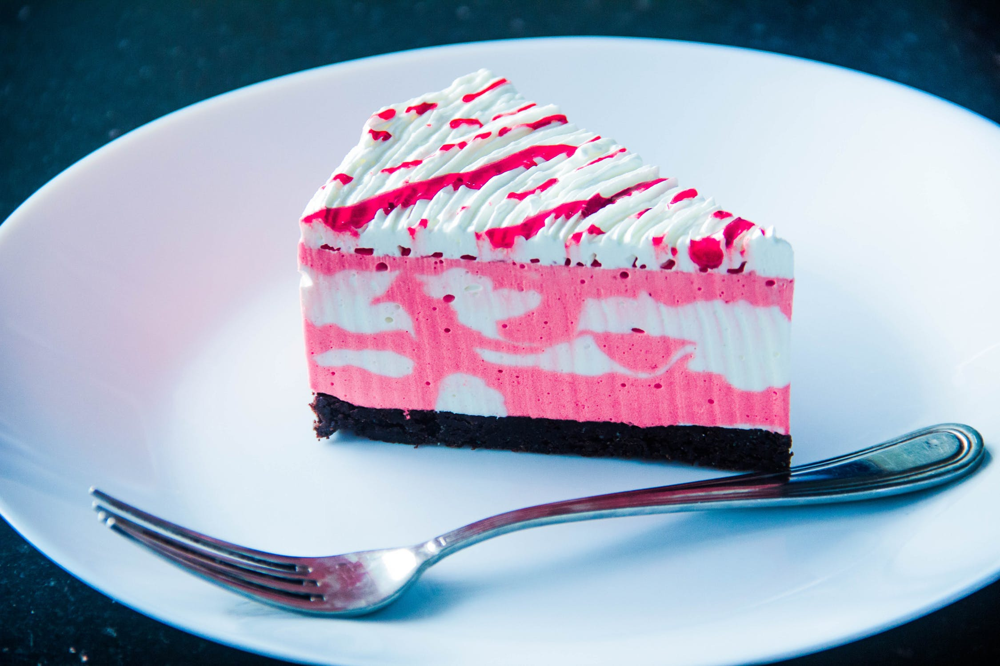
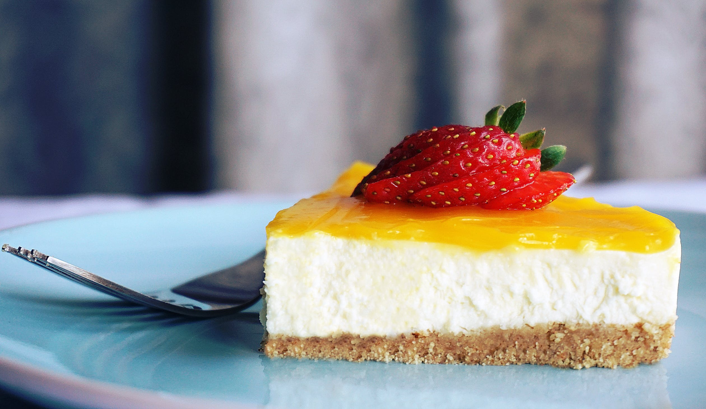
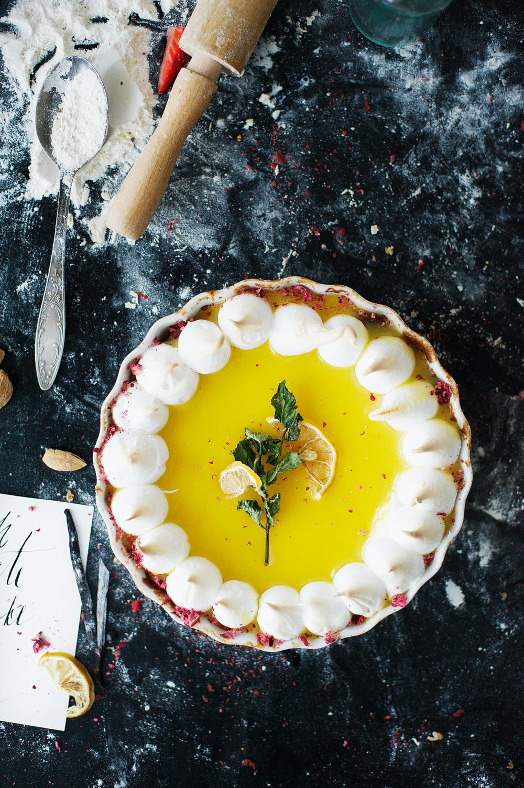

Chocolate Cake
Time to prep: 60 mins
An all-time favorite for cake enthusiasts and amateur bakers alike. Who can argue why it shouldn't be? It's tenderly moist spongy interior mixed with its classic crunchy crust will make an irresistible dessert. Ready to make this conventional cake a little... exotic?
Red Velvet
Time to prep: 145 mins
You know that feeling you get when you just finished a long day's work and you finally crash on a comfortable sofa? Yeah, this cake is just that experience, but for your tastebuds! Let's just relax and take a bake! Ready for a culinary siesta?
Butter Cake
Time to prep: 60 mins
Don't you hate it when you're in the mood for cake and you don't have any extravagant ingredients to bake with? Fear not, Butter cake will easily provide that 'melt in your mouth' sensation with the most basic preparation. How about you see how un-basic this cake can be?
Caramel Cake
Time to prep: 145 mins
The creamiest of the crop. This cake is just for you if you're looking for a mix between candy and cake. It's sweet, it's chewy and it most certainly is never a disappointing dessert. Want something to chew on while still eating cake? This one is for you.
Carrot Cake
Time to prep: 120 mins
Carrot cake is both crunchy and creamy. Popular for its versatility and its distinct taste, Carrot cake will always cause consumers to crack a smile. If you want to hear a satisfying crunch while your taste buds go wild, this is your cake. How about it?
Ice-Cream Cake
Time to prep: 180 mins
We all know cake can sometimes be served cold, but how about REALLY cold? Look no further, Ice-cream cake will gladly give you the best of both worlds in taste and the temperature needed for you to just chill out. You like ice-cream, you like cake, why not mix the two?
Cheese Cake
Time to prep: 150 mins
A personal favorite of Cake Gallery, this unusual piece of deliciousness is the perfect dessert option for a sunny Summer day. It's mouthwatering,milky moistness combined with it's supreme sweetness make for one mean cake. How about some Cheese Cake?
Lemon Cake
Time to prep: 240 mins
As much fun as a sugary cake is, sometimes you need a little 'ZING'. This cake will take your taste on a wild ride with its succulent, citrus filling and soft, savory surface. Don't look so sour, enjoy some Lemon Cake!